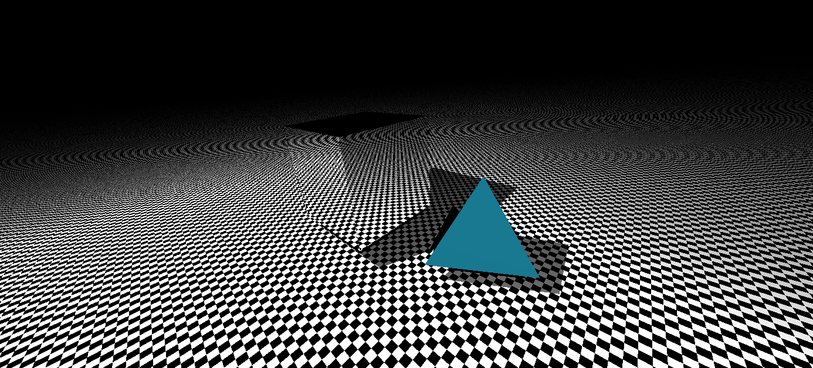
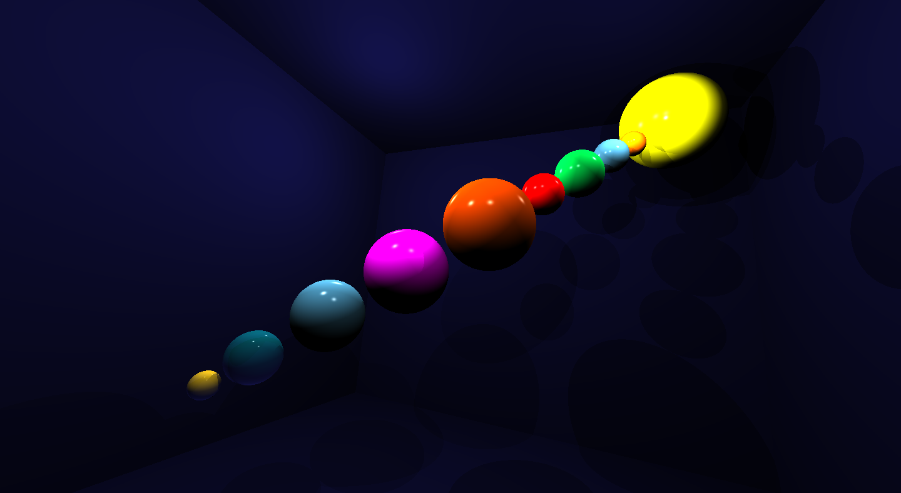

COS426 Assignment 3 Rendering Ray Tracer — Writeup
Switch to: Interactive Editor
- (2.0) TraceRay
- (2.0) Triangle
- (2.0) Sphere
- (2.5) Box
- (3.0) Cylinder
- (3.0) Cone
- (1.0) Shadows
- (3.0) Soft shadows
- (2.0) Transmission
- (1.0) Checkerboard
- (1.5) Phong material
- (1.5) Special material
- (1.0) Scene
- (2.0) Animate
- (1.0) Art Contest
- (0.0) Feedback


TraceRay
For the first part of the assignment, I followed the provided
pseudocode to complete the traceRay and calculateColor
functions. I intersected the ray into the scene and then checked whether or not it was in bounds. Next, I calculated the color by checking the contribution of each light source. I then checked whether or not the material at the intersection point was reflective or refractive, and if so updated the color accordingly.
Triangle
I used implementation 2 from the lecture slides to find intersections with triangles. First I calculated the normal N and distance D using the given Ray 'ray' and vectors 't1', 't2', and 't3'. I then passed these variables into the findIntersectionWithPlane function. If the intersection was out of bounds, then I returned INFINITY. If the intersection was in bounds, then I sent it to my triangleHelper function which checked to make sure that the intersection point on the plane was within the 3 sides of the given triangle. If it was, then I returned the length, otherwise I returned INFINITY.
Sphere
I followed the linear algebra from the lecture slides to implement sphere. I first found tca and checked to be sure that it was in bounds. I then found thc, and then used tca and thc to find the two test intersection points. Then based on which point was both in bounds and closer, I sent the point into my function sphereHelper, which found the position and normal of the intersection and set them. Lastly, I returned the length.
Box
To implement box, I first found the 6 normals of each side, the ray R, and 6 distances. I then used this variables as parameters for the findIntersectionWithPlane function and found 6 temporary intersections. Additionally, I wrote a isInside helper function to check whether or not an intersection point was within the bounds of the box. After setting the distance of the final intersection 'out_intersect' to INFINITY, I checked to see if one of the 6 temporary interections were better using the chooseCloserIntersection function (only if the intersection had passed the isInside test and was within the bounds of the box). Lastly, I returned the best length.
Cylinder
For my implementation of cylinder, I followed the slides posted on Piazza from 2016. First I calculated the values of A, B, and C. I then found the determinant and the solutions to the quadratic equation. If the determinant was less than EPS, I returned INFINITY because the square-root would be imaginary. I then found which solution was closer, and using it, determined which areas were within the top and bottom caps of the cylinder. Lastly, I returned the length!
Cone
My implementation for cone was similar to my implementation of cone. I also followed the 2016 precept slides. I first calculated the values of A, B, C. Once again, I tested the determinant if non-negative, found the closer intersection. Lastly I added bounds that only considered the area between the apex and the bottom disk. Lastly, I returned the length.
Shadows
To implement shadow, I first created a ray with the given vectors 'pos' and 'lightVec'. I then intersected the ray with the scene, and checked the length. If the length was out of bounds (closer than EPS or behind the light), then I returned false. Otherwise, I returned true.
Soft shadows
(Your description of your implementation of Soft shadows goes here...)
Transmission
To implement transmission, I followed the provided slides and wrote code demonstrating Snell's Law. I used it to find the refraction vector and returned it!
Checkerboard
For checkerboard, I changed the color of the material based on its coordinates. First I calculated a value 'test' equal to floor(x + EPS) + floor(y + EPS) + floor(z + EPS). Then, based on whether the test value was odd or even, I returned either a vector with all coordinates equal to zero or one with all one coordinates.
Phong material
I followed the linear algebra for the specular term in the lecture slides to implement phong material. First I calculated the reflection vector and the angle alpha. I then clamped alpha by choosing the maximum between it and 0.0. Lastly, I calculated I_L by dividing 'attenuation' from the light intensity. Then I used alpha, I_L, and the materials specular value and shininess to find I_s.
Special material
For my special material, I made a funky color changing circle design for the back wall. First I calculated the distance of each point from the center. Then, based on that distance, I changed the color based on the x and y coordinates. I also added a vector equal to vec3(0.25, 0.25, 0.25) to each point, so that there wouldn't be any black.
Scene
For my custom scence, I wrote a json file to model the solar system. I first changed all of the walls of the scene to be a dark navy blue color. Then I added in the planets (different color spheres) and sun along the diagonal. The last bit of the system is behind the camera, so you have to turn around in the scene to see them. A picture of it is below in Art Contest. :)
Animate
(Your description of your implementation of Animate goes here...)
Art Contest
For the art contest, I am submitting my custom scene! I designed a solar system using spheres, including the sun and Pluto. I also changed their colors to roughly represent the actual planets.

Feedback
[OPTIONAL] Please provide us with feedback on your experience
working on this assignment. For example, approximately how many hours did you
spend on it? What parts were the most difficult or confusing to work through?
Do you have any suggestions on how to improve this assignment for the future?
Thank you for your feedback!
I really liked this assignment! :) I thought it was fun to implement and cool to mess around with the scene. Overall it probably took me about 10ish hours to finish everything. There were a few parts that weren't totally clear to me based on just the slides, but Piazza was very helpful (TAs did a very good job of responding/clarifying).